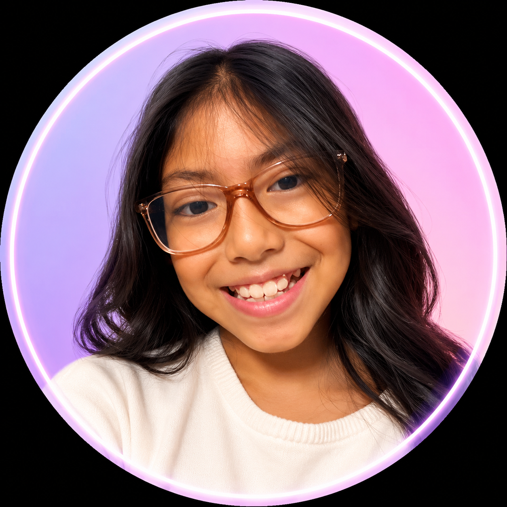

Kiomi, esta app solo funciona cuando estás conectada a WiFi.
Conéctate a tu red WiFi e inténtalo de nuevo.

Configuración inicial — solo una vez. Pega aquí la configuración de Firebase.
Ve a console.firebase.google.com → crea un proyecto gratis → Compilación → Realtime Database → Crear base de datos (modo prueba) → ⚙️ Configuración del proyecto → copia el objeto "firebaseConfig" y pégalo aquí.Guarda una copia de las conversaciones en CSV en GitHub. Puedes omitirlo.
Ve a github.com/settings/tokens → Generate new token (classic) → marca "repo" → Generate token → copia y pega aquí.¿Eres Kiomi o alguien que quiere hablar con ella?
Toca tu nombre para entrar al chat con Kiomi.
Escribe tu código secreto para ver todos tus chats.
Selecciona una conversación